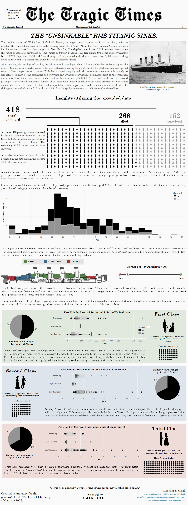

The Tragic Times
The Titanic, told as a 1912 newspaper front page.

The Problem
For the Pomerol Partners DataDNA Dataset Challenge (October 2022), the brief was to reinterpret a themed Titanic dataset (418 recorded passengers).
The dashboard and the newspaper format I utilised for this project were both created in such a way that every finding would be phrased as something a period reader could plausibly have understood at the time.
The Approach
Built as a full 1912 newspaper front page, the analysis layers four demographic lenses — gender, age, class, fare — and cross-references each against the others to separate genuine effect from simple population skew.
The Outcome
Gender produced a complete separation, every recorded male died, while every recorded female survived. Age wasn't itself protective: 18-30 year olds made up 34.93% of passengers and 34.96% of deaths, essentially the same share, meaning this group wasn't disproportionately at risk, just the largest group aboard.
Class told a starker story: First Class survival reached 46.73% (50 of 107 passengers), well above Second (32.26%, 30 of 93) and Third Class (33.03%, 72 of 218) — and because Third Class carried more than double First and Second combined, more Third Class passengers died in absolute terms (146) than the other two classes put together (120). Fare underlines why class mattered so much: the average First Class ticket cost roughly 6.57 times a Third Class one ($94.28 versus $12.46), so the survival gap tracks a real, large gap in what passengers actually paid for their passage.
The project won "The Storyteller" award in the Pomerol Partners DataDNA competition.
Gender produced a complete separation in this dataset — every recorded male died, every recorded female survived.